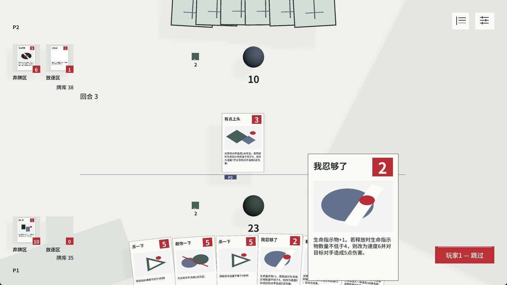
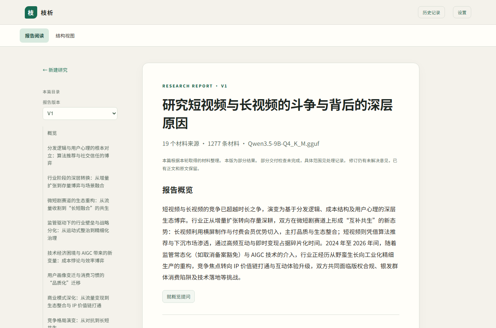

SYXXX00 / SELECTED WORKS
设计玩法，
设计玩法，
也设计工具。
把自己的想法展开为规则与选择，
再做成可以体验、使用和继续发展的系统。
玩法设计 / 原型实现 / AI 创作与研究
Not So Fast!01 / GAME DESIGN

实机局部 / 手牌悬停 ↗3→4
规则门槛 / 生命指示物
积累 +1→伤害 5 · 速度 6
积累也在改变出手的时机。↗
作品选集
SELECTED WORKS / 202601 / GAME & PROTOTYPE · 实机局部
Not So Fast!
↗积累如何变成爆发？先后手又怎样改变兑现？
原创规则与卡牌 · 对局推演 · Unity 可玩原型02 / CREATIVE PIPELINE
Anime Pipeline Studio
↗从多模型组合研究，到围绕作品发展的创作管线。
实验设计 · 图像判断 · 模型与版本协作
03 / RESEARCH WORKSPACE枝析
↗从一个研究问题出发，组织材料、理解与下一段调查。
本地小模型 · 研究方法 · 报告与来源FROM UNDERSTANDING TO CREATION
具体对象模型 / 概念
04 / CONCEPT & MODELING设计锚点新问题后继推导
concept
↗形成能够继续推导、判断和创造的理解。
概念研究 · 跨游戏建模 · AI 工作方法项目之间，
也在相互推动。
卡牌提供具体规则与可推演的关系，生图与枝析提供创作、探索中的实际问题。concept 将这些认识继续展开，支持后续设计，也由项目中的反馈修正。
concept 与项目 ↗